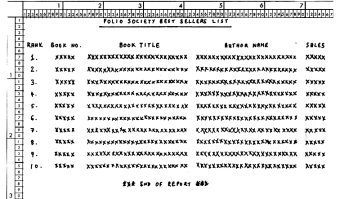

Folio Society
|
||||||||||||||||||||||||||||||||||
| Time to complete | Allow 4-6 hours continuous. | |||||||||||||||||||||||||||||||||
| Program Download | BestSellers.Cbl is a model answer. Don't look at this until you have made your own attempt at the program. | |||||||||||||||||||||||||||||||||
| Example Output |
BSList.Rpt is the report. |
|||||||||||||||||||||||||||||||||
| Example Input |
BookSales.Dat is the sequential Book Sales File BookMF.Dat is the sequential Book Master File |
|||||||||||||||||||||||||||||||||
| Exam Practice |
If you want to try out the exam under the same conditions as our students
you can write the program in a printed version of FBSOutline.Doc.
This is an MS-Word file containing the program outline, the data files
and the report produced by running the program. The time allotted for the exam was 2.5 hours. |
|||||||||||||||||||||||||||||||||
| Major Constructs | Sequential Files, Print Files, SORT with Input Procedure and Output Procedure, Tables | |||||||||||||||||||||||||||||||||
IntroductionThe Folio Society is a Book Club that sells fine books to customers all over the world. Each time a book is sold the Book-Number, the Number-of-Copies and a one character field indicating the Sale-Status (Normal Sale, Free Gift, Reduced Price (N,F,R)) is written to a Book-Sales-File. A program is required to print a list of the ten best selling books (by
copies sold) in the Book Club from the Book-Sales-File. Only Normal Sale
books should be considered. FilesBook Master FileThe Book Master File is a sequential file sequenced on ascending Book-Number. The records have the following description;
Book Sales FileThe Book Sales File is not in any particular sequence but we are guaranteed that a Book-Number that occurs in the file will have a corresponding entry in the Book Master File.
ProcessingSort the Book Sales file throwing away unwanted records (F,R). Accumulate the sales for a book. If the book is in the top ten get the Book-Title and Author-Name from the Book Master File. When the Sorted Book Sales File has been processed, print out the top ten best sellers. Print Specification See print specification and example report.  Click for full size version Copyright Notice This COBOL project specification is the copyright property of Michael Coughlan. You have permission to use this material for your own personal use but you may not reproduce it in any published work without written permission from the author. |
||||||||||||||||||||||||||||||||||
{kind=link}